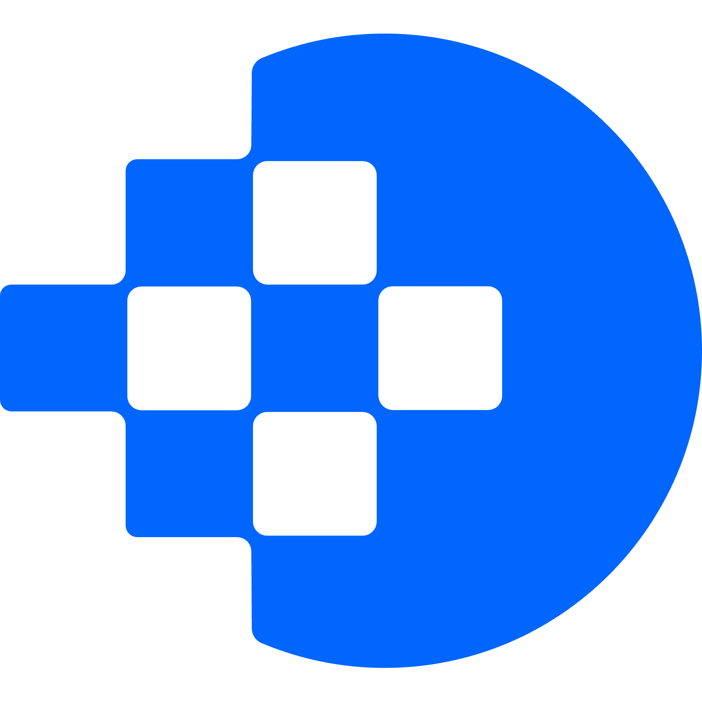

Technology clarity for growing businesses.
Dexal provides practical technical leadership and advisory for companies navigating growth. High-trust consultancy from Daniel Nicolson.
Consultancy services
Fractional CTO
Strategic leadership and technical oversight on a flexible basis. Focused on team scaling, technical roadmaps, and product architecture.
Tech Audits
Objective assessments of software, platforms, codebases, infrastructure, and processes utilising my Tech Balanced Scorecard method.
Technology Strategy
Building long-term technical roadmaps that align perfectly with commercial objectives and business stage.
Systems Review
Streamlining internal operations and workflows to remove bottlenecks and increase efficiency.
AI & Automation
Guidance on implementing AI and automation to drive efficiency, leverage technology and save time.
Delivery Support
Hands-on support to ensure complex projects, migrations, or integrations stay on track and meet their goals.
Technical leadership, simplified.
Dexal is the consultancy of Daniel Nicolson, a senior technology consultant helping companies make better technical decisions.
I bridge the gap between business objectives and tech. I can communicate tech solutions to business leaders and business needs to tech people. My work is focused on providing clarity to founders and leadership teams who need to review their systems, improve operations, or plan for long-term growth.
Based in the UK, I work with a small number of clients to ensure high-impact technical delivery and strategic alignment.